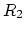
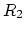

Hint This is a design problem with possibly multiple solutions,
i.e., there may be more degrees of freedom than constraining conditions.
One of such conditions is
 (typically,
) for the DC operating point to be
approximately independent of
(typically,
) for the DC operating point to be
approximately independent of  (see online notes).
(see online notes).
Start the design process from the desired Q-point, determine and
 , then find desired
, then find desired  and finally
and finally  and .
and .